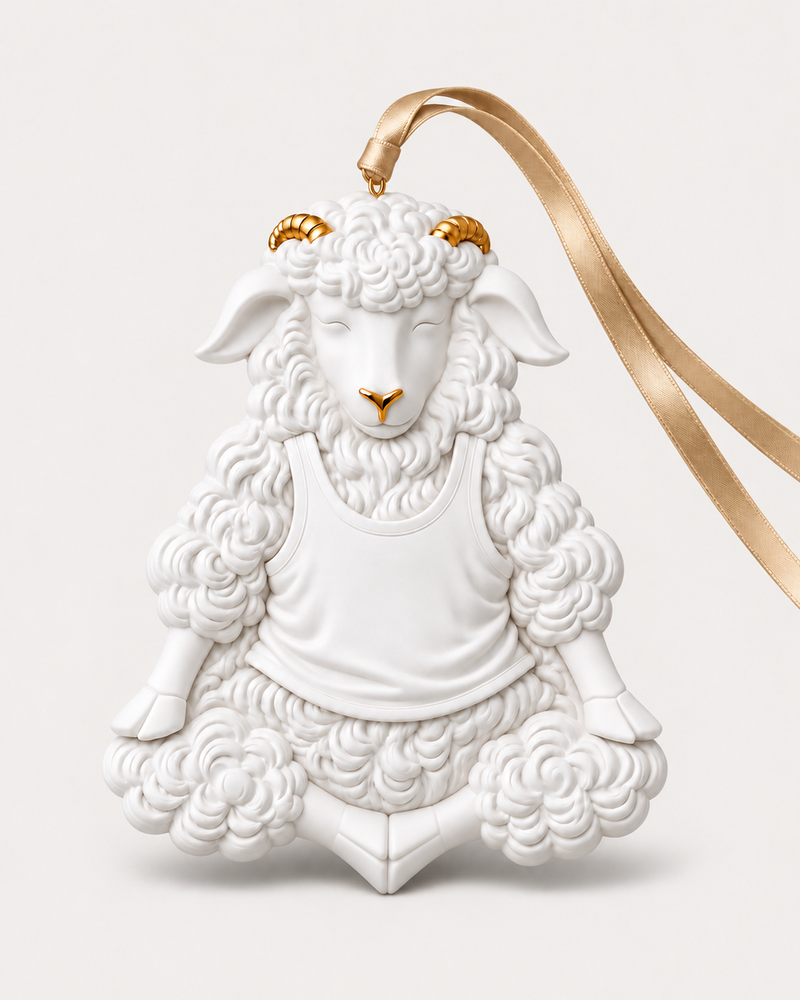

Ёлочная игрушка из фарфора
Овечка, которая
поймала дзен.
Овечка-йога в маечке
Немного юмора, немного спокойствия — и очень много обаяния. Фарфоровая овечка в позе лотоса украшает ёлку и добавляет празднику улыбку.
Небольшой подарок с тёплым пожеланием спокойствия и радости.
Бисквитный фарфор. Рожки и носик покрыты настоящим золотом.
3 000 ₽ / шт.
Рассмотреть в бутике